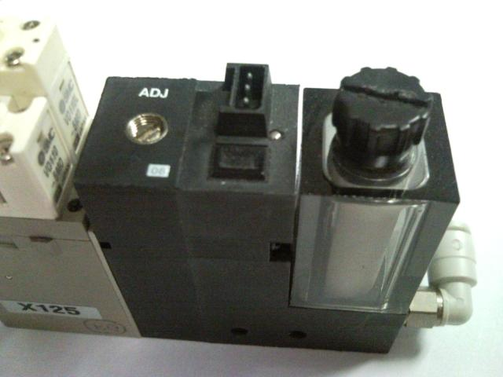
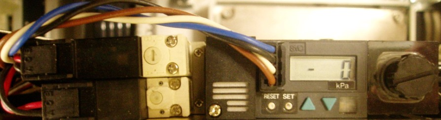
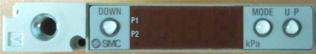

How to adjust Vacuum Unit Sensitivity for NS-6000, NS-7000 and NS-8000
NS6000

For Index
1. turn on vacuum pump
2. Vacuum On with user I/O
3. Rotate adjustment(ADJ) volume to right direction(clockwise). (Valve close)
4. Put on Device and rotate to left direction(anti-clockwise) until light on the vacuum valve turn on.
5. Rotate anti-clockwise 540 degree from turning light point(One and a half turn).
For Input/output

1. Push SET button and display P1. -> It goes to setting mode for OUT(1)
2. Change the value with up/down arrow button and set with P1 is -50
3. Memory value with SET button and go to OUT(2) mode
4. Display setting value for P2.
5. change the value with up/down arrow button and set with P2 is -40
6. OUT(3) = P3 is -50, OUT(4) = P4 is -40
NS7000
For Index
1. Turn off the valve(by rotate clockwise all the way for ADJ)
2. Rotate to left direction(anti-clockwise) and confirm the red light just turn on.
3. Rotate anti-clockwise 540 degree from light turning on point.
For Input/output
1. Set the vacuum pressure with -50Kpa
NS8000
For Index

1) Press and hold [MODE + DOWN] switch for more than 1 sec, set parameter to 213
2) Press and hold [MODE] switch till return to measuring mode(normal mode).
3) Press and hold [MODE + UP] switch for more than 1 sec, P1 LED dot flashed, set P1= - 50
4) Press [MODE] switch
5) P2 LED dot flashes, set P2 = 6
6) Press [MODE] switch
7) P1 & P2 LED dot flashes, set H=0
8) Press [MODE] switch, display F0
9) Press and hold [MODE] switch till return to measuring mode(normal mode).
Remarks:
- Press and hold [UP] switch for more than 1 sec, (PL) on LED flashes and panel operation is Locked.
- Press and hold [DOWN switch for more than 1 sec, (PA) on LED flashes and panel operation is Unlocked.
For Input/output
1. Rotate MODE button and set S1
2. Rotate SET1 button and set value with -50.
3. Rotate MODE button to RUN and finish setting.